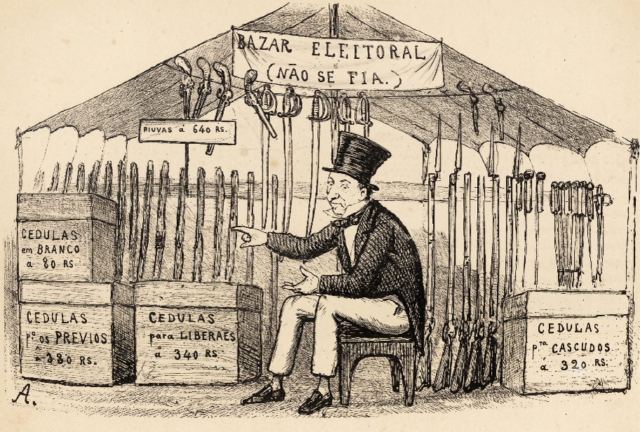
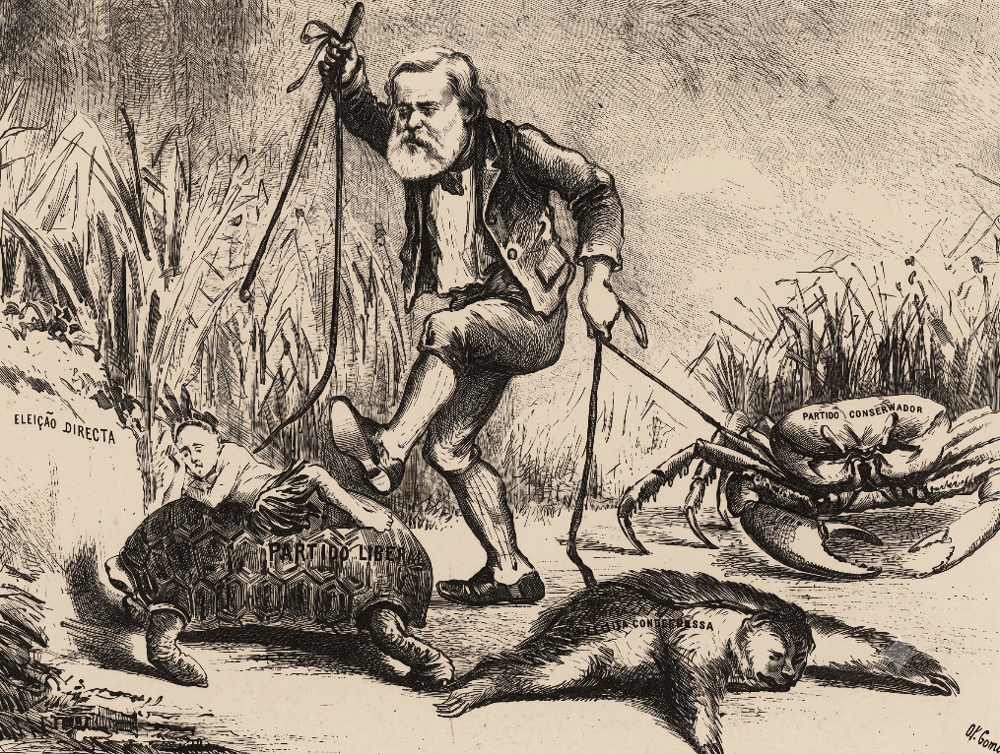

Charge de O Cabrião (1867)
Bazar Eleitoral

Charge publicada em 1867 no jornal O Cabrião, editado por Ângelo Agostini, Américo de Campos e Antônio Manoel dos Reis: um “Bazar Eleitoral” com cédulas de voto e armas à venda.
Charge de 1879
D. Pedro II e os partidos políticos

Charge de 1879: D. Pedro II caminha arrastando pela coleira uma tartaruga rotulada “Partido Liberal” e um caranguejo rotulado “Partido Conservador”, ao lado de um bicho-preguiça, com a legenda “Eleição Directa” ao fundo.